Bulletin N° 21
Avril 2008
QUELLE BELLE ESCAPADE DE 4 JOURS
SUR LA RIVIERA DES FLEURS !
4 h 15, samedi 23 février 2008 , 42 personnes sont présentes à l'appel et prennent place à bord du bus de la SAALT en compagnie de Jean-François le chauffeur et Guilhem le guide. 4 h 30 départ en direction de Nice et de la Riviera.
Après un arrêt déjeuner en cours de route, nous regagnons NICE pour 14 heures où nous allons assister , en bord de mer, sur la promenade des Anglais à la bataille des fleurs 124 ème édition du Carnaval de Nice avec comme thème « Roi des Ratapignatas, Raminagrobis et autres rats masqués », véritable corso composé de chars tous habillés de fleurs fraîches (tokyos, gerberas, marguerites, iris, roses, �illets, glaïeuls, etc� et bien sûr le mimosa, symbole de Nice) d'où de charmants hommes et femmes vêtus de somptueux costumes et de coiffes lancent des milliers de fleurs aux spectateurs.
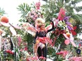 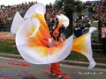 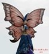
Après ce magnifique spectacle nous rejoignons le bus qui nous conduira en Italie où nous nous installerons dans un magnifique hôtel-restaurant « LAGO BIN à ROCHETTA NERVINA » situé dans une des plus belles vallées de l'arrière pays ligurien. Après installation, nous aurons droit au pot de bienvenue et à un excellent repas suivi d'une soirée dansante.
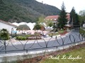 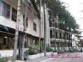 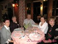
Dimanche 24 février , nous partons à la découverte de l'arrière pays où de petits villages accrochés à flanc de montagne ont gardés tout leur charme. Premier arrêt DOLCEACQUA situé non loin de la Riviera ligure à 8 km de Vintimille, village médiéval avec son pont à arche unique enjambant la Nervia , village surplombé par les ruines du Château ; là nous en profiterons pour faire quelques emplettes dans les boutiques où sur le marché puis ISOLABONA commune de la province d'Impéria. L'après-midi se passera à MENTON où à 14 heures nous assisterons, en tribunes, au Corso de la Fête des Citrons où MENTON a invité les Iles du Monde (Cuba, Tahiti, Nouvelle Zélande, Groenland, Sicile, Corse etc.... Fanfares, groupes folkloriques virevoltent, zigzaguent, dansent entre les magnifiques chars d'agrumes, tous plus beaux les uns que les autres. Les canons à confettis inondent la cité, les rues sont aux géants, fanfares, saltimbanques, sifflets, tam-tam, tambours et créatures de rêve. Il aura fallu 140 tonnes d'agrumes importés d'Espagne pour réaliser ces chars. Certains d'entre nous, à la fin du défilé iront visiter les Jardins Biovès (exposition de motifs géants en agrumes, d'autres le Festival des Orchidées ou tout simplement quelques ruelles commerçantes de Menton puis retour à notre hôtel.
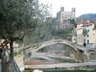 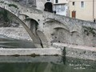 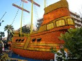 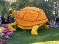
La matinée du lundi 25 février sera consacrée à la visite de Bordighera, Impéria. et San Remo, ville touristique connue pour la culture des fleurs, pour son festival de la chanson italienne qui d'ailleurs avait lieu pendant notre séjour, son rallye automobile. Nous avons flâné le long de l'esplanade longeant la mer d'où nous avons pu découvrir de très belles demeures, de beaux jardins, des massifs de fleurs, la coupole, les croix dorées et les flèches en faïence de l'église orthodoxe russe de Cristo Redentore. Retour sur Rochetta où nous allons déjeuner pour ensuite regagner MONACO avec visite du Rocher. De la place du palais princier nous avons pu admirer de part et d'autre de magnifiques points de vue, le port avec ses yachts et bateaux magnifiques, la cathédrale de Monaco où est enterrée la famille Grimaldi, le jardin des roses etc� pas le temps de passer par le musée océanographique. La journée s'est terminée par un tour panoramique en bus et de nuit du quartier de Monte Carlo, une merveille. De passage à Vintimille nous avons fait un dernier arrêt dans une épicerie fine pour acheter des spécialités italiennes (gorgonzola, pâtes, charcuterie, etc�)
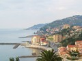 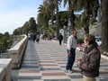 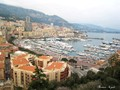 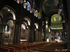
Le 4 ème jour, mardi 26 février , il faut penser au retour, départ 8 heures en Direction de Nice où nous ferons une halte au marché des fleurs sur le célèbre cours Saleya ; certains d'entre nous en profiterons pour ramener quelques pots en souvenir. Après une visite rapide du vieux Nice et de la cathédrale orthodoxe russe St Nicolas, plus ancienne église russe en Europe occidentale classée monument historique, nous reprendrons la route et après l'arrêt déjeuner, direction Toulouse où nous arriverons vers 21 h 15, tous ravis de notre séjour, prêts à repartir.
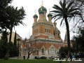
Michelle AUZER
_______________
Page 1 : Le Mot du Président
Page 2 : Couverture maladie, Projet Mémorial, Avis de décèsl
Page 3 : Escapade sur la Riviéra des fleurs
Page 4 :Sortie à Montpellier: ville, aquarium, et serre amazonienne
Page 5 :Repas de printemps
Page 6 :Journée à Albi/Cordes, inscrisption
Page 7 :Théatre, Danse, Voyages 2009, Oenologie
Page 8 :Randonnées, informatique, généalogie, pétanque
______________________________
RAPPEL : permanences tous les mardis de 10 à12h
Téléphone / répondeur : 05 62 11 45 50
Adresse é-mail : azf-ms@wanadoo.fr
Adresse postale : AZF 143 route d'Espagne
31100 Toulouse
|
|

{kind=link}
{kind=link}
{kind=link}
{kind=link}
{kind=link}
{kind=link}
{kind=link}
{kind=link}
{kind=link}
{kind=link}
{kind=link}
{kind=link}
{kind=link}
{kind=link}
{kind=link}
{kind=link}